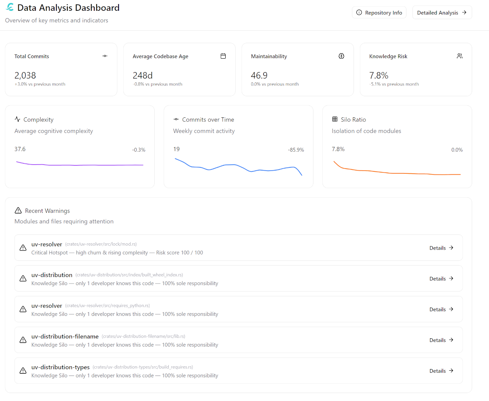
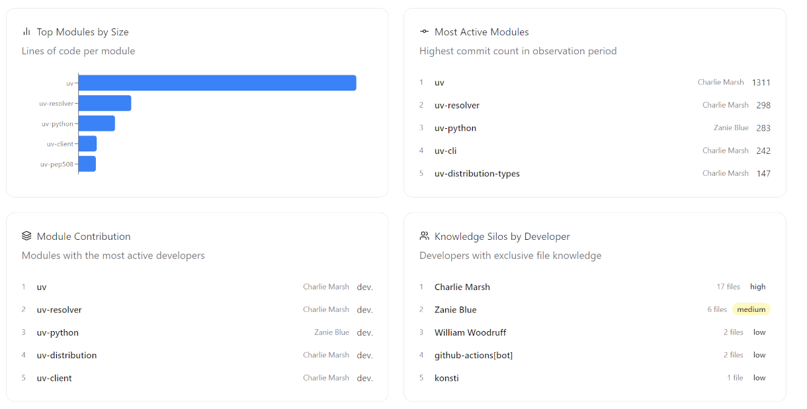

Dashboard Overview
The Dashboard is the entry point of the Calyntro UI. It provides an at-a-glance health report of your repository without requiring any prior knowledge of the underlying analyses. All values are pre-computed by the backend; the dashboard itself performs no aggregation.

The layout consists of four main sections:
KPI Cards: High-level health indicators.
Trend Sparklines: Time-series progression of key metrics.
Warnings Panel: Prioritised issues requiring immediate attention.
Repository Insights: Detailed breakdowns of modules and contributors.
The date range used for all sections is controlled by the global date filter at the top of the page.
KPI Cards
The four KPI cards report the current state of the most critical codebase health indicators. Each card shows a current value and a trend badge that compares the current value against the previous month (30 days).
Card |
What it Measures |
Trend Colour |
Click Target |
|---|---|---|---|
Total Commits |
Number of distinct commits in the selected period |
Green = up, Red = down |
|
Average Codebase Age |
Average age of files in days (first commit to last commit) |
Neutral |
|
Maintainability |
Average Cognitive Complexity across active files |
Green = down, Red = up |
|
Knowledge Risk |
Percentage of files classified as knowledge silos |
Green = down, Red = up |
Clicking any KPI card navigates to the corresponding detail view, pre-filtered to the current date range.
Total Commits
Counts the number of distinct commits in the selected period. The trend badge shows the relative change compared to the previous month.
Average Codebase Age
Reports the average age of all files that were touched in the selected period, where age is defined as the number of days between a file’s first commit and its most recent commit.
Maintainability
Reports the average Cognitive Complexity across all files that were active in the selected period. Lower is better.
Knowledge Risk
Reports the percentage of files in the repository that are classified as knowledge silos — files where a single developer is responsible for 80 % or more of all commits over the file’s lifetime.
Unlike the other KPI cards, Knowledge Risk is a cumulative, stock metric: it reflects the state of the entire codebase as of the current date, not only the files that were touched during the selected period. A file established as a silo five years ago remains a silo today unless a second developer actively takes over ownership. The trend badge compares the cumulative silo ratio as of today against the cumulative silo ratio 30 days ago.
The trend badge is coloured red when the value rises (knowledge is becoming more concentrated) and green when it falls (ownership is being distributed).
Tip
A Knowledge Risk value above 30 % combined with a rising trend is a Bus Factor warning at the project level. Navigate to the Knowledge Silos view to identify which specific files and developers are driving the concentration.
Trend Sparklines
The three sparkline panels sit below the KPI cards and share a common time axis. Each panel shows a time series bucketed in 30-day intervals over the selected date range, with a current value and a period-over-period badge that compares the most recent bucket to the one immediately before it.
Panel |
What it Shows |
Rising Trend Interpretation |
|---|---|---|
Complexity |
Average Cognitive Complexity of all files active per bucket |
Code is becoming harder to maintain |
Lines of Code |
Total net LOC across all files active per bucket |
Codebase is growing |
Silo Ratio |
Cumulative percentage of silo files as of each bucket end date |
Knowledge is becoming more centralised |
The badge next to each sparkline (e.g., +3.2 %) reflects the change from the previous bucket — the same 30-day window as the KPI card trend badges. This keeps the two sections directionally consistent: the sparkline badge and the KPI badge should agree on the direction of change.
Reading the Sparklines Together
The three panels are most informative when read in combination:
Rising Complexity + Rising LOC: New code is being added faster than it is being simplified. If sustained, this indicates uncontrolled growth and declining maintainability. Check the Maintainability KPI and the Scatter Analysis for the worst offenders.
Rising Silo Ratio + Flat Commits: Development is slowing while knowledge is concentrating. The codebase is drifting toward a single point of failure. Review the Knowledge Silos analysis for which files are contributing to the ratio.
Stable Complexity + Falling LOC: Active refactoring or cleanup is underway. The codebase is shrinking while complexity is held constant — a healthy indicator.
Note
Why the Silo Ratio sparkline uses cumulative logic
Complexity and LOC are flow metrics — their values depend entirely on what happened in a given period. The Silo Ratio is a stock metric: a file’s ownership history does not reset when a period boundary is crossed. A file written exclusively by one developer in 2021 is still a silo today, even if it has not been touched recently. Using an activity-based window for silo ratio would cause the metric to drop to zero whenever siloed files are inactive — a misleading signal. The sparkline therefore computes the silo percentage from all commits up to each bucket’s end date, giving a stable, honest view of accumulated knowledge risk.
Warnings Panel
The Warnings panel shows up to five prioritised warnings derived exclusively from Git history. The backend generates up to ten candidates, ranks them by severity and normalised risk score, and returns the top results.
Each warning card shows:
The file or module affected
The reason code and a human-readable label
A severity badge (Critical or High)
A metric value with its unit (e.g., risk score 94 / 100, ownership 97 %)
A Details → link that navigates to the relevant analysis view filtered to that file or module
Warning Types
Reason Code |
Max Severity |
Trigger Condition |
|---|---|---|
|
Critical |
Composite hotspot score ≥ 90 % of the highest score in the period (critical) or ≥ 70 % (high). Combines complexity and churn weighting. |
|
Critical |
One developer accounts for ≥ 95 % of commits to a file (critical) or ≥ 80 % (high). Files with fewer than 5 total commits are excluded. |
|
Critical |
Cognitive complexity trend indicator > 4.0× baseline (critical) or > 3.0× (high). |
|
Critical |
File churn > 5× the project average (critical) or > 3× (high). |
|
High |
File age > 365 days and recent churn > 2× the project average. Indicates that dormant, complex code is being actively modified. |
Warnings are sorted first by severity (Critical before High), then by normalised risk score descending. This ensures that the most actionable items appear at the top regardless of warning type.
Tip
Recommended workflow: Review the Warnings panel at the start of each sprint. A warning that persists across multiple consecutive periods is a strong signal that it has become structural debt — escalate it to the architecture backlog rather than treating it as a one-off item.
The most dangerous single pattern is a critical_hotspot or complexity_spike warning on a file that is simultaneously a silo_risk: complex, actively changing code that only one person understands.
Repository Insights
The bottom section provides four specialized panels that break down the repository structure and team activity.

Top Modules by Size
Displays the modules with the highest number of Lines of Code (LOC). This helps identify the largest functional areas of the codebase which often represent the core business logic or significant architectural components.
Most Active Modules
Lists modules with the highest commit activity in the selected period. It also shows the Main Contributor for each module — the developer with the most commits to that specific module during the period.
Module Contribution
Shows the number of distinct developers (authors) who have contributed to each module. Modules with a high author count indicate collaborative development, while those with very low counts might be nearing a knowledge silo state.
Knowledge Silos by Developers
Identifies individual developers who are the primary owners of knowledge silos. It lists the number of files for which the developer is the sole or dominant expert. Each entry includes a Risk Level badge (Critical, High, Medium, Low) based on the concentration of silos per developer.
API Endpoints
The dashboard widgets are backed by three dedicated backend endpoints:
Endpoint |
Widget |
|---|---|
|
All four KPI cards (current value + trend badge) |
|
All three sparkline panels |
|
Warnings panel |
|
Top Modules by Size |
|
Most Active Modules |
|
Module Contribution |
|
Knowledge Silos by Developers |
All aggregation, bucketing, and trend calculation is performed in the backend. The frontend renders pre-computed values only. See API Reference for the full request and response schemas.